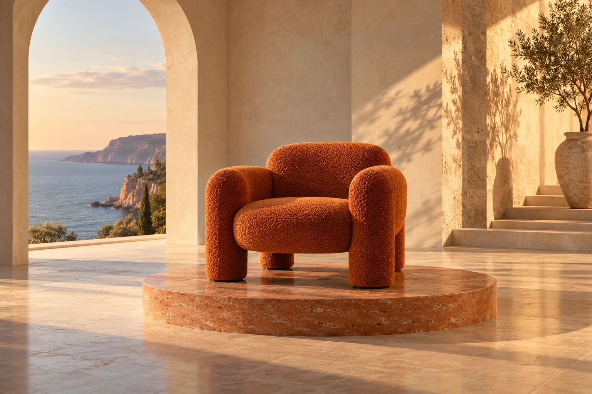

ЧТО ТАКОЕ
НОДА?
Нода — это отдельный шаг: она хранит данные или выполняет действие. Первая нода хранит промпт для генерации изображения.
ТЕКСТ СТАНОВИТСЯ
ИЗОБРАЖЕНИЕМ.
Связь передаёт промпт в ноду генерации. Нода читает описание и возвращает готовый кадр.
ВЫХОД ОДНОЙ НОДЫ.
ВХОД ДЛЯ СЛЕДУЮЩЕЙ.
Готовое изображение передаётся в следующую ноду, чтобы добавить движение.
ИЗОБРАЖЕНИЕ
ПОЛУЧАЕТ ДВИЖЕНИЕ.
Нода анимации получает кадр и описание движения.
Кадр станет началом ролика, а инструкция задаст работу камеры.
ТЕКСТ. КАДР.
ГОТОВОЕ ВИДЕО.
На выходе теперь видеофайл. Воспроизведи его, сохрани или вернись к любой ноде, чтобы изменить настройку.
Генерация изображения
ПромптПодключён
Скульптурное оранжевое кресло в светлом интерьере с аркой…
На выходе будет изображение
Изображение
Результат
Изображение появится автоматически
Нода запускается при прокрутке
Изображение в видео
+
ИзображениеСначала создай кадр
○Видео
MP4 · 6 сек▷Видео появится автоматически
Сначала создадим кадр, затем добавим движение